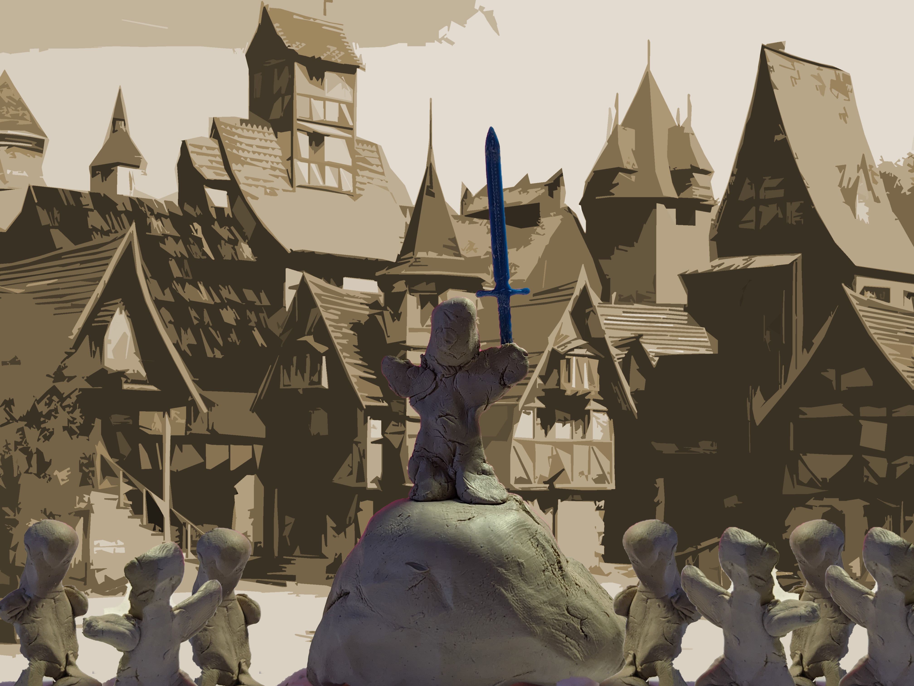
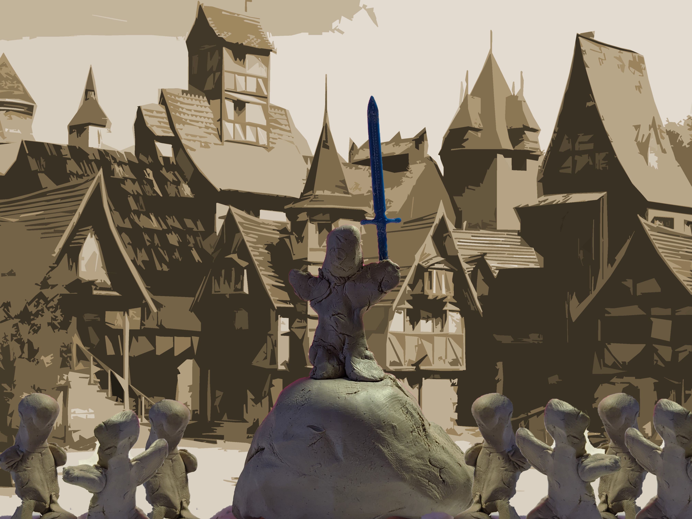

Ideation & Prototyping Week 6
Photo Essay
For my photo essay I decided to go with the excited child as my main protagonist. I figured that a main character of that nature would go perfectly with my item form the 50 sketches, a sword. I'm actually in the process of moving out of my apartment by the end of the month so I kinda lost my original
3D print of my sword so I printed out a new one, this one is a little bit smaller to fit my character.
After reading about the heroes journey last week, I thought it was fitting for my character and was inspired to
use a similar story structure. I wrote the script before sketching out the key images but I focused on composition and
how to get the maximum amount of value per image like a story book.
I'm actually in the process of moving out of my apartment by the end of the month so I kinda lost my original
3D print of my sword so I printed out a new one, this one is a little bit smaller to fit my character.
After reading about the heroes journey last week, I thought it was fitting for my character and was inspired to
use a similar story structure. I wrote the script before sketching out the key images but I focused on composition and
how to get the maximum amount of value per image like a story book.
 After going through his journey, my character gets to go though a realization and growth. I think this is a key
part of any story, without it, stories usually feel empty.
I set up a small scene and made some simple characters with my limited traditional sculpting skills with some
clay I forgot to pack. I wanted to focus on capturing my photos close to the composition of my story board.
I decided to take the photos with a simple background with a plan on creating the scenery using photos and
Photoshop.I also used my smart phillips hue lightbulb to change the lighting and help set the mood.
After a painstaking amount of image manipulation, background keying, and color adjustment I decided to make
the story into a little video since I felt like it helped amplify the mood I was going for and this format also seems to lend
itself well for this style of video. Below the video I will also post the photos with the story as well. Hope whoever watches this enjoys it!
After going through his journey, my character gets to go though a realization and growth. I think this is a key
part of any story, without it, stories usually feel empty.
I set up a small scene and made some simple characters with my limited traditional sculpting skills with some
clay I forgot to pack. I wanted to focus on capturing my photos close to the composition of my story board.
I decided to take the photos with a simple background with a plan on creating the scenery using photos and
Photoshop.I also used my smart phillips hue lightbulb to change the lighting and help set the mood.
After a painstaking amount of image manipulation, background keying, and color adjustment I decided to make
the story into a little video since I felt like it helped amplify the mood I was going for and this format also seems to lend
itself well for this style of video. Below the video I will also post the photos with the story as well. Hope whoever watches this enjoys it!
 There was once a young excited child who lived peacefully in his village. He trained frequently with the sword to one day inherit his family’s heirloom blade. Always excited, he was deemed never quite ready to wield the sword.
One day an evil warlord came and attacked the village. The boy took up his family’s cherished blade and attempted to fight back.
With the heavy blade, he was knocked down without even putting up much of a chance, luckily the boy was able to slip away in the chaos. The village was pillaged and most of the villagers were killed or imprisoned.
Day and night the boy fought to survive deep in the forests. He had to take shelter against the harsh winter, hunt and gather for food as well as defend himself against wild animals.
The adversity made him strong and clever and with a clear goal in sight, excitement filled him once again and he was determined to take back his village.
In the dead of the night, the boy snuck into the village and emptied contents of poisonous mushrooms and snake venom into their barrels of mead he found while living in the wild.
He patiently stalked as the raiders became sick from the meade after a celebration. With his trusty sword in hand, the boy snuck in and slit the ropes that tied his friends and family one at a time along with the throats of his enemies.

After a night of glory, he finished off the evil warlord and all was well. It was not the sword that made him strong but his own cunning.
There was once a young excited child who lived peacefully in his village. He trained frequently with the sword to one day inherit his family’s heirloom blade. Always excited, he was deemed never quite ready to wield the sword.
One day an evil warlord came and attacked the village. The boy took up his family’s cherished blade and attempted to fight back.
With the heavy blade, he was knocked down without even putting up much of a chance, luckily the boy was able to slip away in the chaos. The village was pillaged and most of the villagers were killed or imprisoned.
Day and night the boy fought to survive deep in the forests. He had to take shelter against the harsh winter, hunt and gather for food as well as defend himself against wild animals.
The adversity made him strong and clever and with a clear goal in sight, excitement filled him once again and he was determined to take back his village.
In the dead of the night, the boy snuck into the village and emptied contents of poisonous mushrooms and snake venom into their barrels of mead he found while living in the wild.
He patiently stalked as the raiders became sick from the meade after a celebration. With his trusty sword in hand, the boy snuck in and slit the ropes that tied his friends and family one at a time along with the throats of his enemies.

After a night of glory, he finished off the evil warlord and all was well. It was not the sword that made him strong but his own cunning.
home
while (!deck.isInOrder()) {
print 'Iteration ' + i;
deck.shuffle();
i++;
}
print 'It took ' + i + ' iterations to sort the deck.';